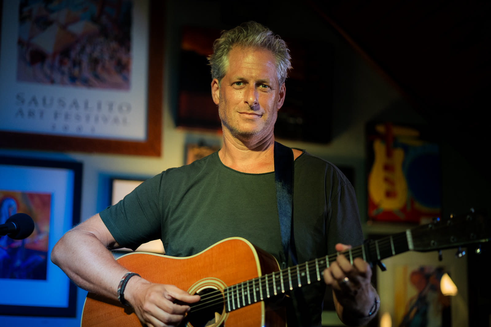
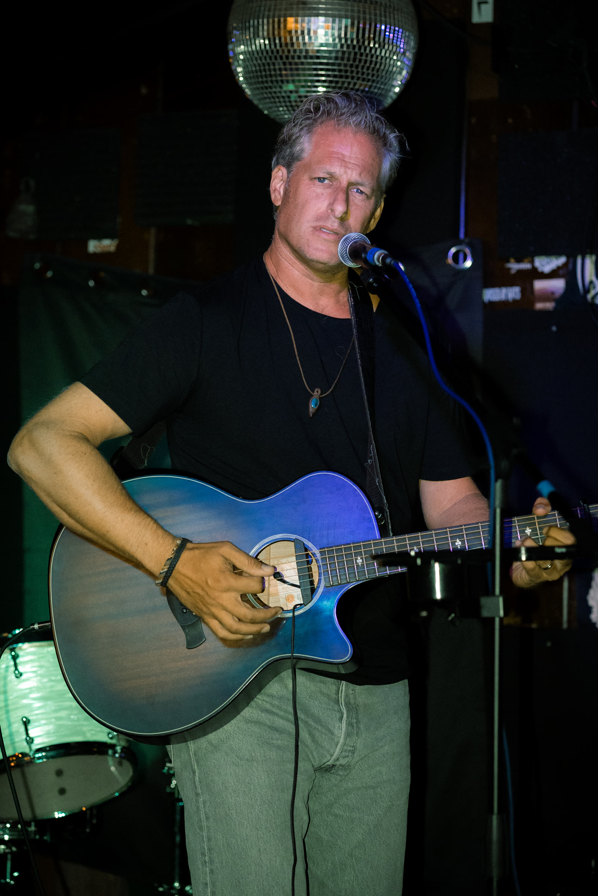
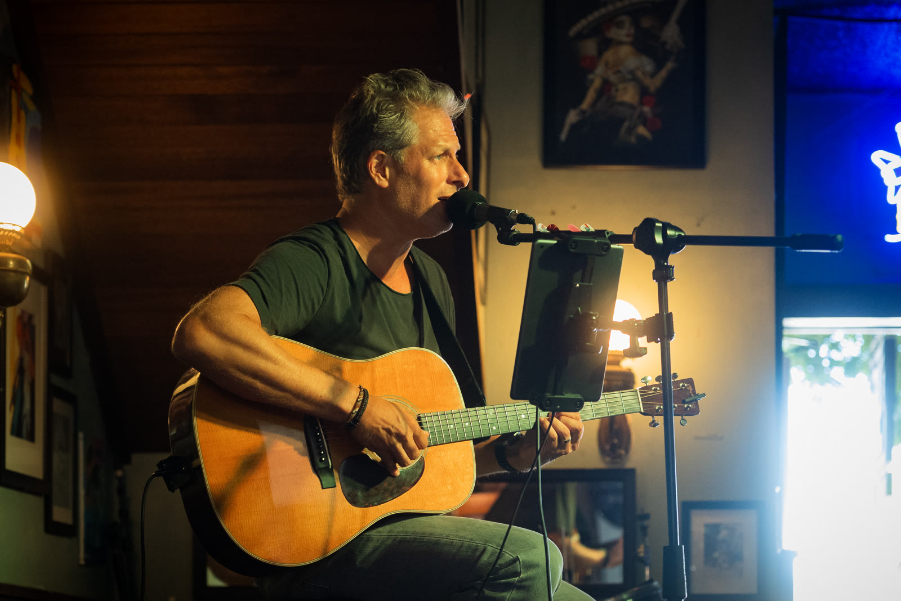
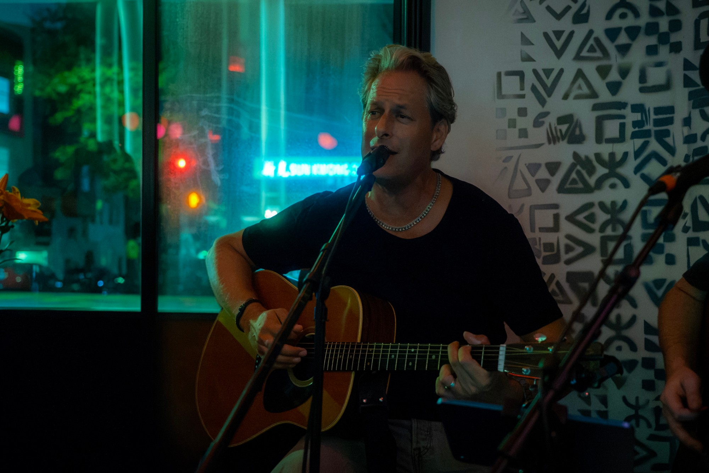

Acoustic songs in small rooms around Marin and San Francisco.
I sing and play acoustic guitar, mostly in bars, wineries and private parties around the Bay Area. The set is songs I love: Springsteen, U2, Bob Marley, Neil Young, Mumford and Sons, and a few of my own.
I keep it quiet enough that people can still talk, and loose enough that it never feels like a show.
Your wordsTwo or three lines on where you wrote it, or who it's about. Plain, like telling a friend.
Your wordsWhen you first heard it, and why it stuck.
Your wordsA small, specific memory tied to this song.




If you'd like me to play your bar, winery or party, send a note.
pascal@zuta.coMarin, San Francisco, North Bay and East Bay. I bring my own PA or use the house sound.